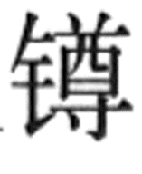
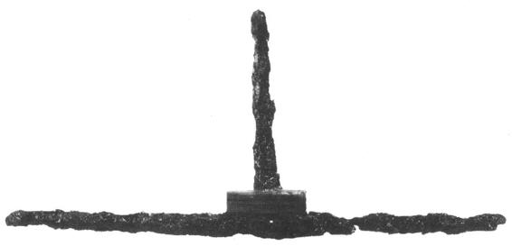
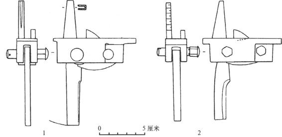
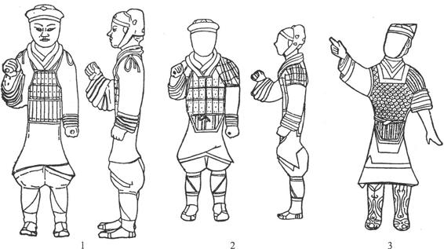
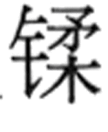
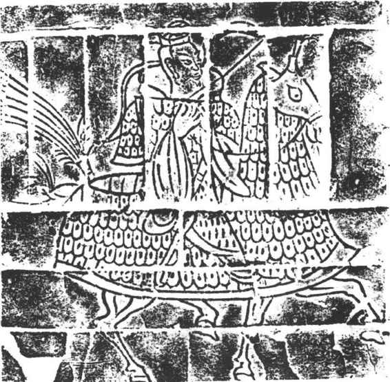
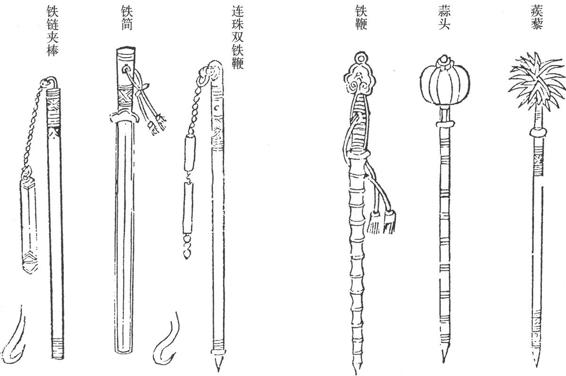
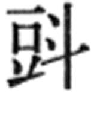
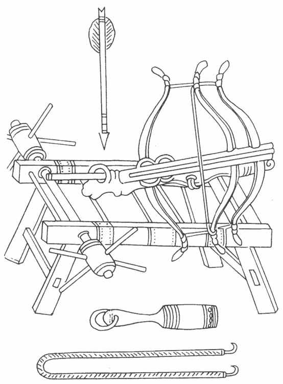
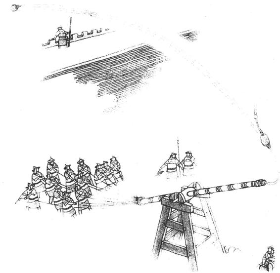

早在商代，人们已经懂得利用天然的陨铁，经锻造后用于制作兵器的刃部。例如在河北藁城台西村的商代遗址中，就曾发现一件青铜钺，以锻成薄片的陨铁作刃，浇铸成一体。至于真正懂得以人工冶炼的铁来制造兵器，是迟到西周时代晚期的事，曾在河南三门峡西周虢国墓中出土有钢刃铜茎玉柄短剑。通过对目前考古发掘中所获得的中国早期铁器资料的科学检验和分析，表明中国的冶铁技术在春秋末期（即公元前6世纪末叶）有很大发展，用低温固体还原法或块炼铁法炼成“块炼铁”，并可利用它再渗碳锻造成钢。同时从春秋末叶起，生铁在中国得到了日益广泛的应用。到战国中晚期，中国已进入大规模用铁时期。铁的冶炼和使用，标志着新的生产力的出现，促进了社会发展，中国历史进入了铁器时代。
钢铁冶锻工艺在西周晚期一开始出现，人们就将这种金属材料，尝试着制作短剑，春秋时期，进一步用钢铁来制造兵器。在甘肃灵台景字坪和湖南长沙，都发现了这一时期的钢剑，前者是嵌在铜柄中的，钢刃残片长仅9厘米；后者附有铜剑格，全长也只有38.4厘米，但还难以作为主要格斗兵器。经鉴定，长沙钢剑所用的钢是含碳量0.5%左右的中碳钢，金相组织比较均匀，可能进行过热处理。据推测，这两件钢剑都是从固态还原的铁，再渗碳锻造而成。不过那时的钢铁兵器，尚属个别尝试的制作品，并不能在战争中起重要作用，但已呈现出冷兵器材质改革的新的曙光。
战国时期，人们已进一步掌握了块炼铁固态渗碳制钢的方法，并用于研制兵器，于是钢质的矛、戟和剑等兵器才较多地出现于战争场合。在考古发掘中，在燕和楚两国的疆域之内，都出土过较多的钢铁兵器，特别是在河北易县燕下都遗址的一座丛葬墓（44号）内，有22个战死的士卒尸体和许多兵器。出土的兵器以钢铁质料的为主，有剑15件、矛19件、戟12件，（图19—12）小刀1件和匕首4件，还有11件装在矛、戟等长柲尾后的铁。至于青铜兵器，只有戈、剑、弩机各一件，和19件带有铁铤的三棱铜镞。墓中还出土一顶以铁甲片编成的兜鍪。这一发现，雄辩地表明了战国晚期燕地钢铁兵器发展的规模。经过检验，剑、矛、戟中确有以块炼铁渗碳的低碳钢制作的，有的还经过淬火，以增强刃部的硬度。另一些是以块锻铁直接锻成的铁制品。此外，在古代文献中，还有三晋地区当时也制作铁兵器的记载。这些都表明战国末年，已有较多的钢铁兵器用于装备军队并用于实战，不过它还不可能取代青铜兵器，还有待于社会生产力水平的提高，不是短期可以完成的，因此青铜兵器还在继续大量制造并作为军队的主要装备。不过，钢铁兵器的应用已经标志着青铜兵器衰落的命运是无可挽回的了，它们将被钢铁兵器最终取代只是时间问题了。

图19-12 战国铁戟（河北易县燕下都44号墓出土）
秦始皇扫平六国，形成统一的局面。不久就爆发了以推翻秦的暴政为目的的农民大起义，而后经历了楚汉之争又迎来了西汉的统一。随着汉代中央集权封建国家的巩固，特别是文景时期的经济发展，促进了钢铁冶炼业的发展，生产规模日益扩大，工艺技术不断提高，这就为兵器制造业从传统的以青铜为主要原材料，向以新兴的钢铁为主要原材料的变革，提供了坚实的物质基础。同时经过从秦末农民大起义、楚汉之争到西汉初期，在军队的成分和编制等方面都出现了与封建制的巩固基础相联系的新变化，农民最终成为军队中士兵的主要成分，古代战车兵和那笨重的驷马战车一起被淘汰，骑兵和步兵升为主要兵种，而为了抗御游牧民族军队的袭扰，更促进了骑兵的成长和发展，这些都对汉代的兵器制造业提出了新的要求，主要适用于车战的成组青铜兵器早已过时，它们的形体特点和战术性能既不适应新材料和新工艺的要求，也不适应新兴的步、骑兵的战术需要。于是汉代的兵器呈现出新的面貌，进入铁器时代兵器的发展期。
由于钢铁兵器远比青铜兵器锋利和坚韧，以及骑兵和步兵新的战术需要，汉代兵器从类型到具体形体特点都有新的变化。
仍以弓和弩为主，但使用的箭已大量采用铁制的镞，从西安汉长安城武库遗址出土的兵器观察，箭镞中铁镞的数量超过1000件，同时出土的青铜镞的数量，只及铁镞的1／10左右。在河北满城中山靖王刘胜墓中出土的箭镞，共达441枚，其中只有70枚是青铜镞，其余均用钢铁制造，钢铁镞与青铜镞的数量之比，为5.3:1。用钢铁制造消耗量大的箭镞，也表明当时钢铁兵器生产的规模是相当可观的。至于青铜镞，也还沿用到东汉时期，主要是三棱锥状的镞，常装有铁铤，当时习惯称为“羊头镞”。
弩在汉代军队中，其重要性超出弓箭，特别在边防的烽燧守御军队中，强弩是主要的远射兵器。汉弩的弩机，主要仍用青铜铸制，（图19—13）但都在机括外周加施铜廓，以增强弩力。同时，为了提高命中的精确度，在一些弩的望山上加有刻度，用于瞄准，具有近代步枪的表尺作用，是一项重要的改进。

图19-13 西汉青铜弩机（河北满城出土）
除了材质方面由青铜转向钢铁以外，兵器类型和具体形状也有较大的变化。
戈 殷周时期几乎是每个战士必备的青铜戈，到西汉时期已从战场上消失，被淘汰出兵器的行列，只在少数西汉大墓中，发现有形貌华美的铜戈，并附有金质、银质或鎏金的鸳鸯形戈龠及柲末端的，表明它们已是王侯的特殊的仪仗器，而不再是实战兵器。
矛 青铜铸制的矛，在汉代仍然使用，但更多的是钢铁的矛。铁矛的形状与传统的铜矛出现较大差异，多呈体长而锋锐的形态。同时较多地使用近于剑形的特殊的阔刃铁矛，称为“铩”，用于步兵格斗时，它可以装较长的柄，也可装短柄，与盾牌配合使用。
戟 战国至秦大量装备军队的以柲联装刺和戟体的青铜戟，也和青铜戈一样被淘汰，类似的青铜戟体在西汉墓出土的兵器中只有个别遗留。取代它的是钢铁制作的戟。为了锻造方便并便于骑兵冲刺，其具体形状与青铜戟大不相同，都是从战国晚期铁戟出现时创制的“卜”字形，特点是直刺而前伸，旁枝与刺体垂直横出，也极尖锐。东汉以后，钢铁戟的旁枝又向上弧曲，更增强了叉刺的效能。直到魏晋时，这种戟几乎是战士必备的标准兵器。
剑 流行于东周时期的青铜剑，逐渐让位于钢铁锻制的长剑，剑体日益窄长而且剑锋更尖锐。
刀 西汉时期出现了新型的手握短柄格斗兵器——刀。刀体修长。宽脊薄刃，柄的后端作成扁圆的大环，所以一般称为“环首刀”。这种用于劈砍的环首刀，更适应骑兵和步兵的战斗需要，逐渐代替了铁剑，东汉以后成为主要的手握短柄格斗兵器，与盾牌相配合，一直到南北朝时仍是标准的步兵装备。
钺 青铜钺也从兵器的行列中消失。在汉代出现了一种由矛（或铩）与钺斧结合而成的新型兵器，在东汉时期的遗址和墓葬中已有发现。
盾牌 汉代除大量地以木材、皮革等制造盾牌外，也制造铁盾，以增强防护功效。同时在东汉时还出现了一种特殊的盾，在铁盾的上下各伸出锐利的铁钩，成为既可进攻又可防护的新型兵器——钩镶。
铠甲 铁制的铠甲已经用以普遍装备部队，都是以铁甲片编缀制成的，比较大的长条形甲片编成的称“札甲”，比较小的叶状甲片编成的制作细密的称“鱼鳞甲”。（图19—14）在满城西汉墓中出土的一领铠甲，由2859片甲片编成，重16.85千克，工艺精细，是西汉铠甲中的精品。皮甲也还使用，但也仿照铁铠甲片的形制，先制成皮甲片，然后连成整领皮甲。

图19-14 西汉铠甲（陕西咸阳出土陶俑）
汉代钢铁兵器的发展，使得钢铁兵器到东汉时期终于代替了青铜兵器，除部分铜弩机和箭镞以外，全被钢铁兵器所取代，至此青铜兵器向钢铁兵器的过渡已告完成，钢铁兵器进入它的发展期。
钢铁兵器进入发展期的标志，主要是制作技术的日臻完备。一方面在钢铁冶炼方面，已由块炼铁锻打渗碳成钢到初级阶段的百炼钢的阶段，发展到以炒钢料锻打的百炼钢，并出现了“杂炼生”的灌钢工艺，提高了钢铁兵器的材质和生产工艺。另一方面，淬火工艺也日臻成熟，三国时蜀丞相诸葛亮让蒲元造刀、取蜀江水淬火的故事，正反映了淬火技术发展的事实，使所生产的兵器更加锐利。至于兵器的类型方面，大致沿袭着汉代钢铁兵器的传统而有了进一步发展。两晋以后，特别是南北朝时期，军队的主力是重装骑兵，因此兵器发展的重点放在改进骑兵装备方面。重装骑兵的格斗兵器，由马戟逐渐改为长体双刃的马矟（槊），增强了冲刺功效和穿透力，以利于透过日益牢固的铠甲的防护而杀伤敌人。与此相适应，对人和战马的防护也日趋完备。这时除了人披的铠甲以外，特别注重战马的防护，制造了披在马体上的“具装”铠。（图19—15）它是由面帘、鸡颈、当胸、马身甲、搭后和寄生等部分构成，使马体得到完备的保护，只有耳朵、眼睛、口鼻和四肢、尾巴露在外面。还使用了改进的马鞍和普遍装备了马镫，使骑兵的威力达到前所未有的程度。

图19-15 南朝的甲骑具装拼镶砖画（江苏丹阳南朝墓出土）
南北朝以后，经过隋唐，中国冷兵器的发展已经达到它的顶峰。北宋庆历四年（1044）修撰成书的《武经总要》一书，便是对汉唐以来传统的冷兵器中当时还装备军队的各种类型，以及新发展的兵器及装具，进行了总结性的记录。在该书前集第十三卷《器图》中，集中记录了当时军队使用的各种兵器装备，每一件都配有插图。在第十卷至第十二卷，有《攻城法》、《水攻》、《水战》、《守城》等四篇，也都详细地记录了与这几种战法有关的兵器装备，还有战船和城防工事的情况，也附有详尽的图像。使各种兵器装具的具体形貌，得以展现在人们面前。从这一角度来看，《武经总要》可以说是中国古代兵器的百科全书。
《武经总要》中记录的传统格斗兵器，仍以刀、矛（枪）为主，而剑和戟已从实战兵器中淘汰了，其中剑还保存了两个图形，但注明“今不用于阵，以失其传也”，表明它已是被淘汰的兵器。而戟这一类型，根本就没有出现，更说明它早已从军队的正式装备中被淘汰的事实。另外，出现了各种棒类兵器，表明它们是当时经常装备军队用于实战的。在刀、枪类中，为了适应各种特殊战斗的需要，每类下又各形成许多分支。如刀有八种，包括手刀、掉刀、屈刀、掩月刀、戟刀、眉尖刀、凤嘴刀和笔刀，其中手刀是手握的短柄刀，其余都装有长柄。枪（矛）有九种，包括双钩枪、单钩枪、环子枪、素木枪、鸦颈枪、锥枪、梭枪、槌枪和大宁笔枪，它们分别用于装备步兵、骑兵，还有的无刃，是用于教阅训练用的，如锤枪。各种棒类兵器，除一般的白棒、杆棒外，还有附加尖刃、倒钩、钉头等的特殊形制，如钩棒、抓子棒、杵棒、狼牙棒等，另有一些以链连接几节棒体的特殊兵器，如铁链夹棒、连珠双铁鞭，是从西北少数民族地区传来的兵器类型。同样用于砸击的兵器还有“骨朵”，（图19—16）是宋代常用的新型兵器，即在直柄上安装一个大体呈圆球形的锤头，依形状不同，又有“蒜头”和“蒺藜”等名目。大量使用砸击类兵器，可能与宋代以步兵对抗骑兵的战斗阵势有关。至于远射兵器，仍以弓箭为主，也使用弩。防护装具有铠甲和马甲，以及步兵和骑兵使用的盾牌。

图19-16 北宋鞭、简、骨朵、铁链夹棒（明版《武经总要》附图）
在《武经总要》中，较突出地记录了当时的重型远射兵器，主要是各种床弩和砲。床弩是以绞车张发的强弩，用几十人甚至以牲畜为动力，因此威力强大。这种兵器早在《墨子》中就已提及，在唐杜佑《通典》中称为“车弩”。开始时是单弓，用绞车绞张。后来改为复合弓，威力更强。《武经总要》中载有双弓和三弓之分，双弓的有“双弓床弩”、“大合蝉弩”、“小合蝉弩”、“双弓子弩”，三弓的有“三弓弩”、“次三弓弩”、“手射弩”、“三弓子弩”，其中三弓弩要用70人绞张才能发射，射程200步到300步，约370—560米。（图19—17）“砲”（礮），就是利用杠杆原理的抛石机具，在火炮发明以前，它是军队中最重型的远射兵器，可以抛发巨大的石弹。据传在春秋时已出现于战场上，三国时曹操使用的“霹雳”车也是这种兵器。这种抛石砲是在巨大的木制砲架上，装有一根可以转动的横轴，横轴上固定着长的砲梢（一根长木杆，中央处固定在轴上），砲梢一端用绳索连着一个用来兜装石弹的皮窝，另一端系上几十根长长的拽索。射击的时候，由一个战士把石弹定置在皮窝上，另外几十个战士猛然地拽动拽索，砲梢一下子反转上来，利用杠杆原理产生的抛力把石弹抛射出去，沿抛物线轨迹射向敌方。（图19—18）在《武经总要》中记录的各种砲，大致有三类，一类是固定放置的，有单梢砲、双梢砲、五梢砲、七梢砲、虎蹲砲等；另一类砲架可以旋转，改变发射方向，有旋风砲、独脚旋风砲、旋风五砲等；还有一类下面装有车轮，可以随时移动位置，如砲车、旋风砲车、卧砲车、行砲车等。其中威力最大的是七梢砲，砲梢由7根巨大的梢材合成，长2丈8尺，需用250人拽索发射，可以把90到100斤重的石弹抛掷到50步远的地方。

图19-17 北宋三弓弩（明版《武经总要》附图）

图19-18 砲（抛石机）间接射击方法示意图
随着筑城技术的提高，出现了更多的专门用于攻城和守城的器械，其中最早出现的登城用的“云梯”，早在东周晚期就已出现。至北宋时期，冷兵器阶段的攻守城器械已经相当完备，《武经总要》中有很详尽的记录。前面讲述过的重型远射兵器床弩和砲，对于攻守双方都是重要的装备。此外攻城器械方面，主要有用于跨越深壕的“濠桥”、“折叠桥”等，攀越高墙的“飞梯”、“云梯”等，掩护战士逼近城垣的“尖头木驴”、“木牛车”、“辒车”等，登高侦察城内敌情的“巢车”、“望楼车”等。守城器械主要用于毁坏敌方的攻具和杀伤敌方登城士兵，包括各种形状和质料的檑石、檑木及“铁撞木”，用以烧毁攻具的“燕尾炬”、“飞炬”、“猛火油炬”等火攻器械，以及塞补被敌方摧毁的防御工事所用的“塞门刀车”、“木女头”等，还有对付火攻的灭火器材，如唧筒和各式皮水囊，防御砲石飞矢的“垂钟板”、“蓖篱”、“皮竹笆”等装备。特别值得注意的是在《武经总要》所列的守城器械中，出现了利用火药制造的兵器，包括“火毬”、“火药鞭箭”、“蒺藜火毬”、“霹雳火毬”等多种。它们的出现，标志着冷兵器已步入衰落期，并预示中国古代兵器即将发展到新的阶段，那就是火器与冷兵器并用的阶段。